Accelerating event-based processing with coroutines on CPUs and GPUs
Jens Pedersen & Jörg Conradt
jeped@kth.se jegp@mastodon.social jepedersen.dk
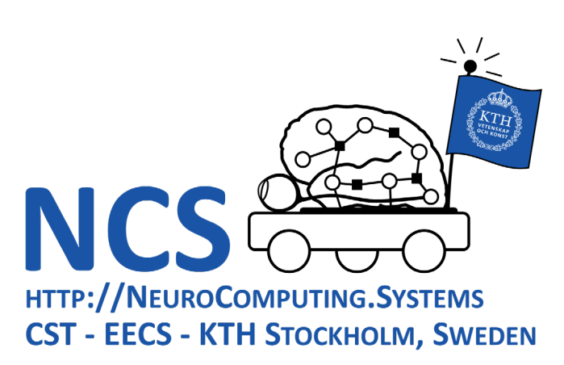
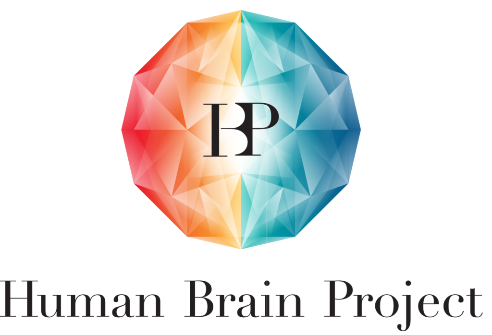
Threads and buffers
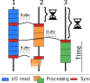
Lock-free cooperation
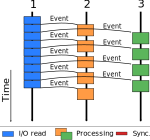
Almost no synchronization overhead
No complex memory abstractions
CPU benchmarks
Do coroutines improve throughput?
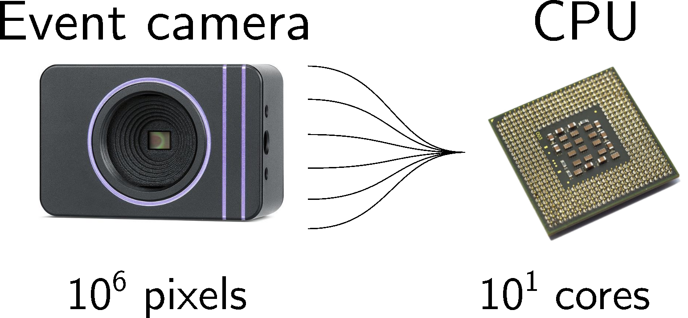
Generated $10^6$ to $10^9$ events
Time storing and loading in shared memory
CPU benchmarks: mutex barrier
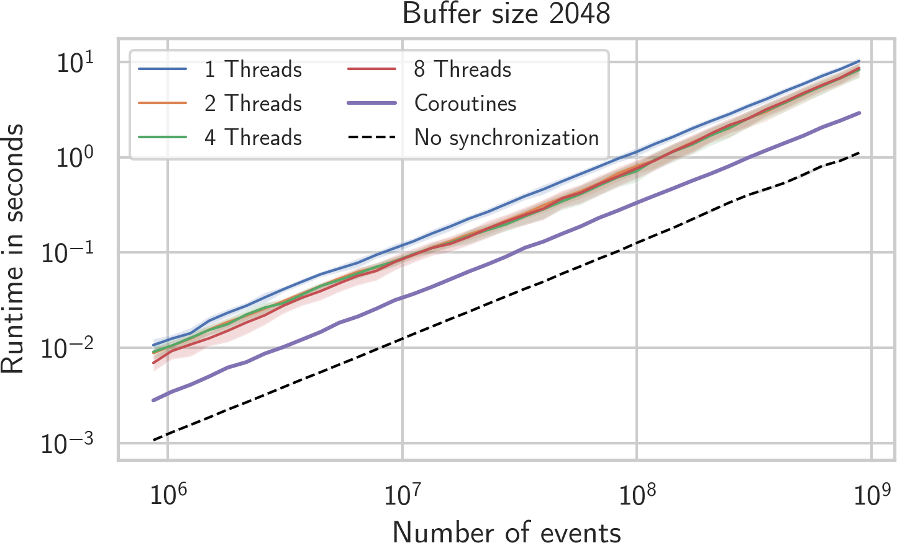
CPU benchmarks: relative speed
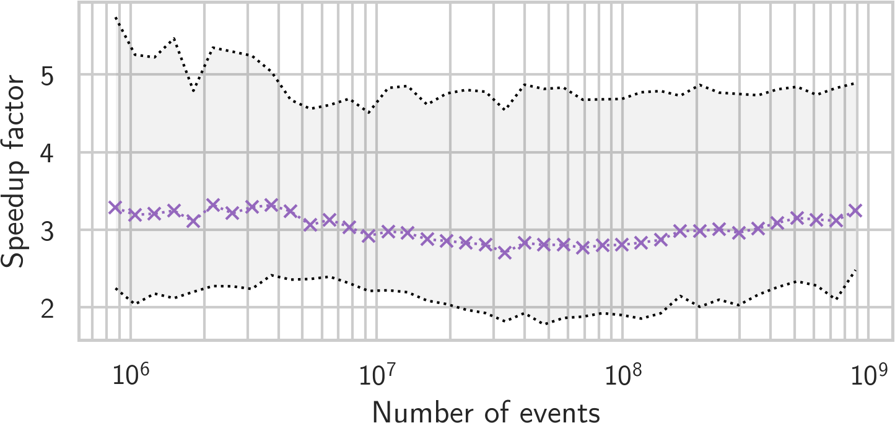
GPU benchmarks
Do coroutines improve throughput on GPUs?
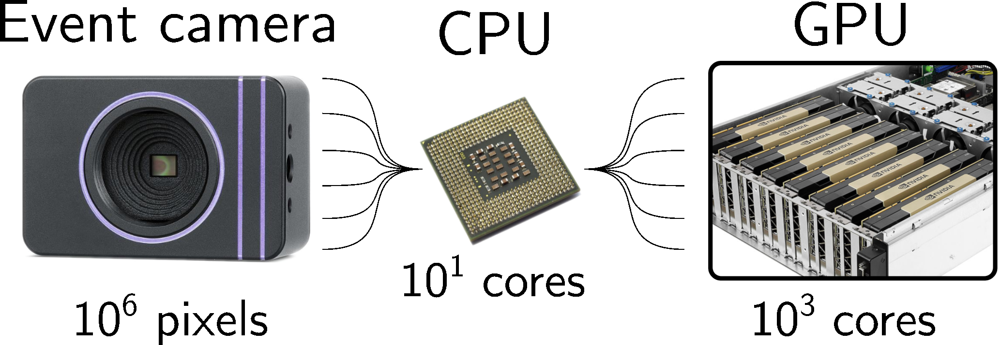
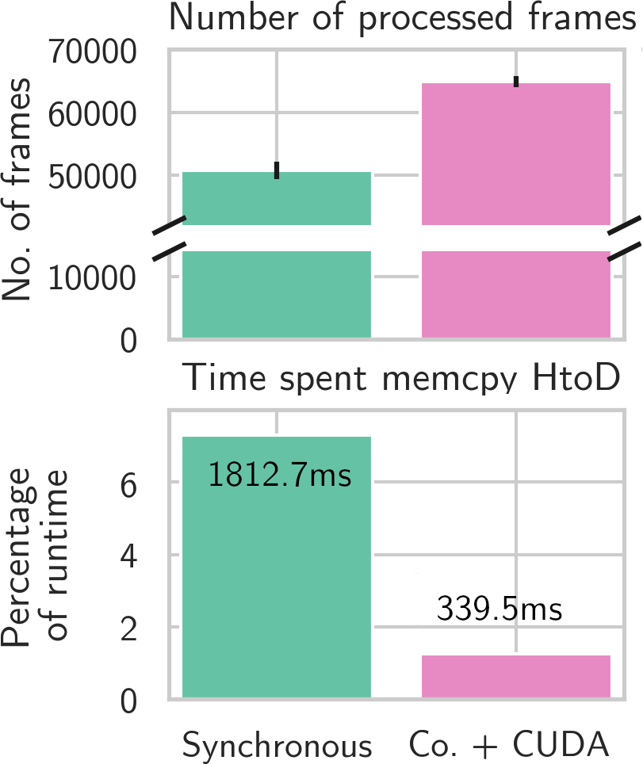
SpiNNaker benchmark
Increases throughput from 200kev/s to 10Mev/s
Reduces streaming latency by 30%
Edge detection with SNN
from aestream import USBInput # Import AEStream
net = ... # Create SNN network
with USBInput((640, 480), device="gpu) as camera:
while True: # Loop forever
tensor = camera.read() # Read a tensor "frame"
out = net(tensor) # Apply
AEStream
Easy to use and open source
Supports large number of input/output pairs
3x throughput for events on CPUs
5x throughput for events on GPUs
AEStream - Accelerating event-based processing with coroutines
Jens Pedersen & Jörg Conradt
jeped@kth.se jegp@mastodon.social jepedersen.dk
Thank you - Juan P. Romero B., Emil Jansson, Anders Søborg, Alexander Hadjivanov, Cameron Baker,
Steven
Abreu, Harini Sudha, Christian
Pehle, Gregor Lenz
 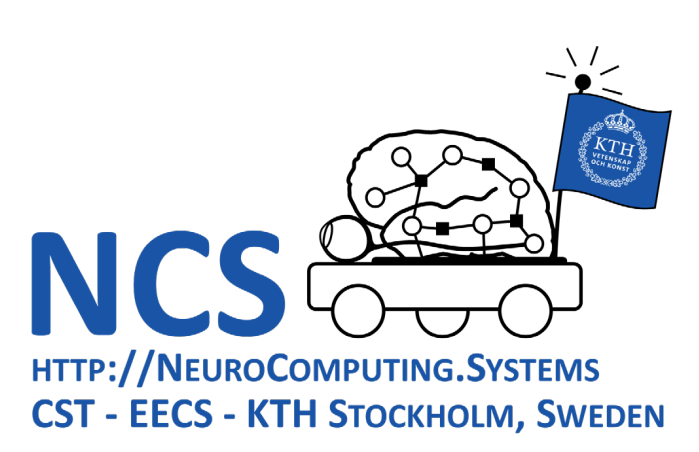
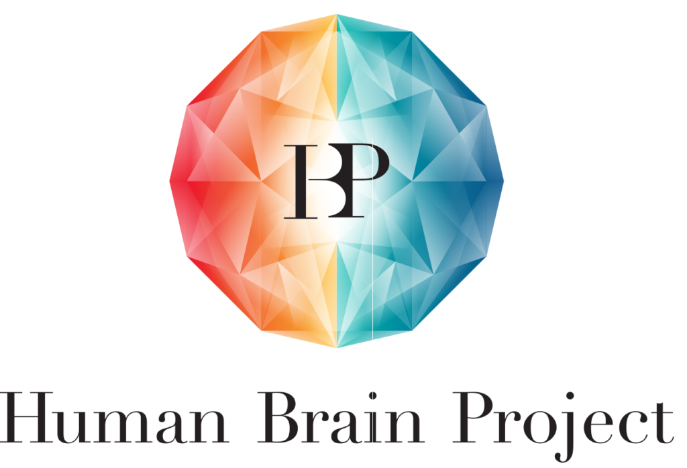
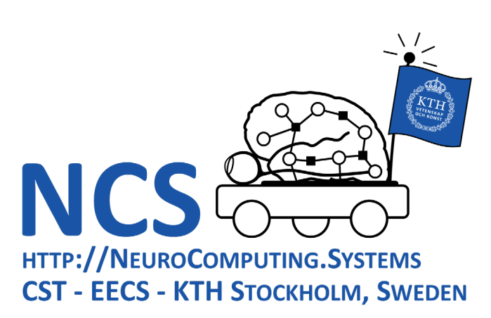
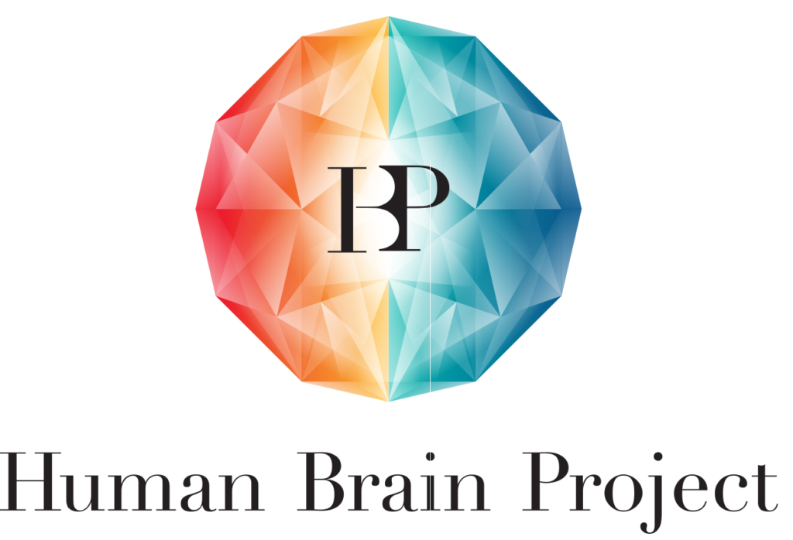